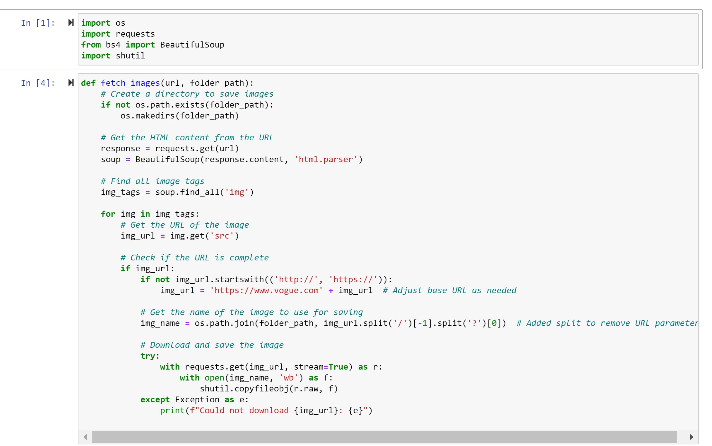
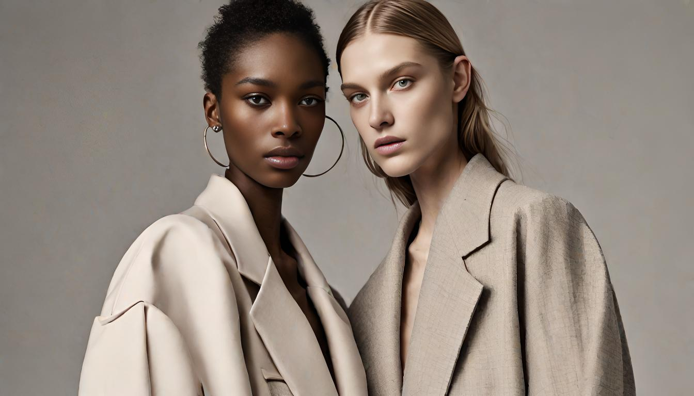

About the project
'FOGUE' is a fake fashion magazine, which focuses around how AI and generative art are playing pivotal roles. Fashion trends are evolving quickly, with AI helping brands predict upcoming styles. To create a fashion collection highlighting future trends, I analysed AI-generated insights, used datasets, and trained an AI style generator on RunwayML with these images.
Read the magazine
Development



I employed web scraping methods to gather images for training my AI image generator within the Runway ML platform. I extracted recent editorial photos from Vogue, as well as high-end runway show images from renowned brands like Givenchy, Gucci, and Louis Vuitton, to obtain visuals similar to the desired style for my magazine.
Additionally, the latest runway shows are able to show into the current fashion trends for the AI to follow. Once I had my collection of images I trained my generator and started promoting my desires images to be created.
After training the generator in RunwayML and providing it with prompts, I had a collection of high-quality fashion magazine-inspired images inspired by other AI image prediction studies. However, I occasionally encountered issues where the generated images lacked clarity or had peculiar merging of facial features and outfits that appeared unusual on the models' bodies.
To address these concerns, I found it necessary to rephrase or request the generator to generate new images until I had a set that met my standards.
Once I had curated a set of images, I worked on the process of designing the layout for my magazine. These images were strategically placed in various chapters to emulate different collections. To create a cohesive and polished magazine, I utilised ChatGPT to write articles that matched each image.
I provided the AI with prompts containing buzzwords and instructed it to describe the images, allowing me to seamlessly integrate these articles alongside the pictures, resulting in a cohesive and professional-looking magazine.
The choice of a magazine to display this project was for several reasons. the first being visual storytelling. Magazines are visually driven, making them an ideal easy medium to showcase fashion, which is inherently visual. These AI-generated designs and trends can be vividly displayed, allowing readers to fully appreciate the aesthetics and intricacies of the collections I created.
Additionally, a magazine format allows me to weave a narrative around the AI's predictions and designs choices. I able to create story through these images and utilise other AI tools such as ChatGPT to do so. I was able to create themed sections or stories that guide the reader through different aspects of future fashion trends, providing context and depth to the AI-generated predictions.